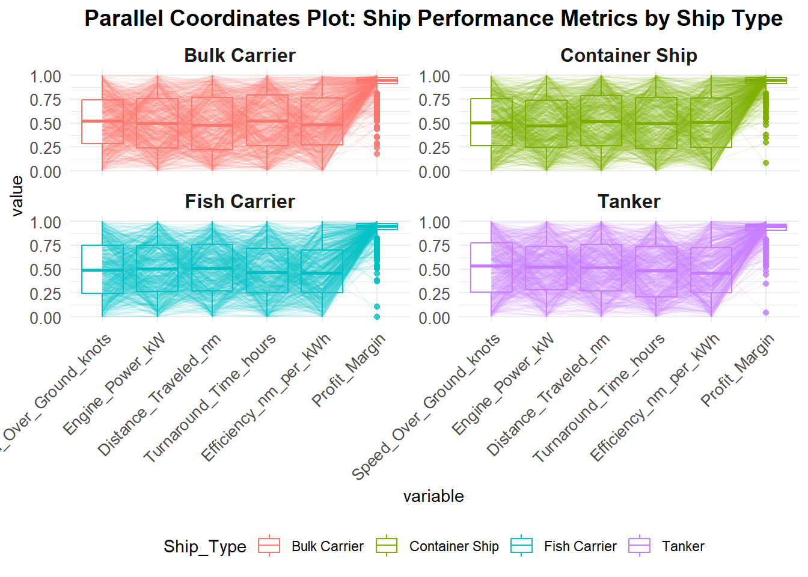
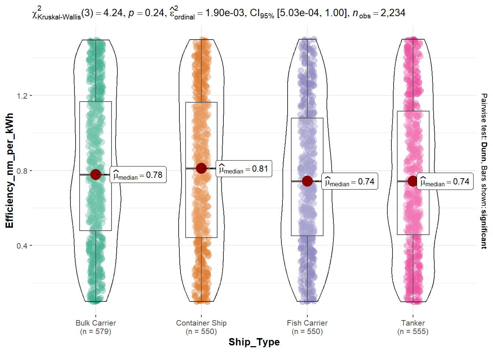

Take-home Exercise 1
Ship Performance Data Analysis
1. Introduction
1.1 Background
One of the most important aspects of international trade, the marine industry makes a substantial contribution to both sustainability and economic growth. Improving decision-making and reducing environmental effect require an understanding of ship performance, fuel efficiency, and operating cost issues.
The purpose of this dataset is to offer a platform for investigating ship performance trends, spotting patterns, and using data-driven methods to address actual maritime problems.
1.2 Objectives
In this exercise, the data is processed by using appropriate tidyverse family of packages and the statistical graphics are prepared using ggplot2 and its extensions to identify trends and relevant business insight regarding shipping performance.
2. Getting Started
2.1 Analytical Tools
The following code chunk uses p_load() of pacman package to check if packages are installed in the computer. If they are, the libraries will be called into R.
- tidyverse: Core collection of R packages designed for data science. It is a set of packages that work in harmony because they share common data representations and ‘API’ design. This package is designed to make it easy to install and load multiple ‘tidyverse’ packages in a single step.
- ggthemes: to use additional themes for ggplot2
- ggridges: Ridgeline plots provide a convenient way of visualizing changes in distributions over time or space
- patchwork: ‘patchwork’ is a package that expands the composition of multiple plots to allow for arbitrarily complex composition of plots by, among others, providing mathematical operators for combining multiple plots.
- ggstatsplot: Extension of ‘ggplot2’, ‘ggstatsplot’ creates graphics with details from statistical tests included in the plots themselves. It provides an easier syntax to generate information-rich plots for statistical analysis of continuous or categorical data.
- GGally: ‘GGally’ extends ‘ggplot2’ by adding several functions to reduce the complexity of combining geometric objects with transformed data. Some of these functions include a pairwise plot matrix, a two group pairwise plot matrix, a parallel coordinates plot, a survival plot, and several functions to plot networks.
- corrplot:Provides a visual exploratory tool on correlation matrix that supports automatic variable reordering to help detect hidden patterns among variables.
2.2 Data Sources
Key operational metrics and characteristics of several ship types in the Gulf of Guinea are represented by the Ship Performance Dataset, a synthetic yet realistic data collection. This dataset is designed for professionals interested in studying clustering, prediction, and optimization issues in the maritime sector, as well as fans for maritime data analytics and machine learning practitioners. This dataset is from kaggle.
3. Data Wrangling
3.1 Importing Data
3.2 Duplicates Check
# A tibble: 0 × 18
# ℹ 18 variables: Date <date>, Ship_Type <chr>, Route_Type <chr>,
# Engine_Type <chr>, Maintenance_Status <chr>, Speed_Over_Ground_knots <dbl>,
# Engine_Power_kW <dbl>, Distance_Traveled_nm <dbl>, Draft_meters <dbl>,
# Weather_Condition <chr>, Cargo_Weight_tons <dbl>,
# Operational_Cost_USD <dbl>, Revenue_per_Voyage_USD <dbl>,
# Turnaround_Time_hours <dbl>, Efficiency_nm_per_kWh <dbl>,
# Seasonal_Impact_Score <dbl>, Weekly_Voyage_Count <dbl>, …No duplicates are present in the dataset.
3.3 Na values
Date Ship_Type Route_Type
0 0 0
Engine_Type Maintenance_Status Speed_Over_Ground_knots
0 0 0
Engine_Power_kW Distance_Traveled_nm Draft_meters
0 0 0
Weather_Condition Cargo_Weight_tons Operational_Cost_USD
0 0 0
Revenue_per_Voyage_USD Turnaround_Time_hours Efficiency_nm_per_kWh
0 0 0
Seasonal_Impact_Score Weekly_Voyage_Count Average_Load_Percentage
0 0 0 No na values are present.
3.4 Data Overview
Using the glimpse() function, we see that the dataset consists of 2736 rows rows and 18 columns. It also shows the column names, column type, and the first few entries of each column.
Rows: 2,736
Columns: 18
$ Date <date> 2023-06-04, 2023-06-11, 2023-06-18, 2023-06-2…
$ Ship_Type <chr> "Container Ship", "Fish Carrier", "Container S…
$ Route_Type <chr> "None", "Short-haul", "Long-haul", "Transocean…
$ Engine_Type <chr> "Heavy Fuel Oil (HFO)", "Steam Turbine", "Dies…
$ Maintenance_Status <chr> "Critical", "Good", "Fair", "Fair", "Fair", "F…
$ Speed_Over_Ground_knots <dbl> 12.59756, 10.38758, 20.74975, 21.05510, 13.742…
$ Engine_Power_kW <dbl> 2062.9840, 1796.0574, 1648.5567, 915.2618, 108…
$ Distance_Traveled_nm <dbl> 1030.9436, 1060.4864, 658.8741, 1126.8225, 144…
$ Draft_meters <dbl> 14.132284, 14.653083, 7.199261, 11.789063, 9.7…
$ Weather_Condition <chr> "Moderate", "Rough", "Moderate", "Moderate", "…
$ Cargo_Weight_tons <dbl> 1959.0179, 162.3947, 178.0409, 1737.3853, 260.…
$ Operational_Cost_USD <dbl> 483832.35, 483388.00, 448543.40, 261349.61, 28…
$ Revenue_per_Voyage_USD <dbl> 292183.27, 883765.79, 394018.75, 87551.38, 676…
$ Turnaround_Time_hours <dbl> 25.86708, 63.24820, 49.41815, 22.40911, 64.158…
$ Efficiency_nm_per_kWh <dbl> 1.4551789, 0.2903614, 0.4995945, 0.7029057, 1.…
$ Seasonal_Impact_Score <dbl> 1.4156533, 0.8856478, 1.4058132, 1.3707043, 0.…
$ Weekly_Voyage_Count <dbl> 1, 6, 9, 1, 8, 7, 3, 6, 8, 2, 9, 4, 3, 7, 7, 3…
$ Average_Load_Percentage <dbl> 93.76925, 93.89537, 96.21824, 66.19370, 80.008…3.5 Check Data Structure
Using the str() function, we observe that some variables may need to be re-casted. In this case all the columns are in the right type and re-casting is not necessary
spc_tbl_ [2,736 × 18] (S3: spec_tbl_df/tbl_df/tbl/data.frame)
$ Date : Date[1:2736], format: "2023-06-04" "2023-06-11" ...
$ Ship_Type : chr [1:2736] "Container Ship" "Fish Carrier" "Container Ship" "Bulk Carrier" ...
$ Route_Type : chr [1:2736] "None" "Short-haul" "Long-haul" "Transoceanic" ...
$ Engine_Type : chr [1:2736] "Heavy Fuel Oil (HFO)" "Steam Turbine" "Diesel" "Steam Turbine" ...
$ Maintenance_Status : chr [1:2736] "Critical" "Good" "Fair" "Fair" ...
$ Speed_Over_Ground_knots: num [1:2736] 12.6 10.4 20.7 21.1 13.7 ...
$ Engine_Power_kW : num [1:2736] 2063 1796 1649 915 1090 ...
$ Distance_Traveled_nm : num [1:2736] 1031 1060 659 1127 1445 ...
$ Draft_meters : num [1:2736] 14.13 14.65 7.2 11.79 9.73 ...
$ Weather_Condition : chr [1:2736] "Moderate" "Rough" "Moderate" "Moderate" ...
$ Cargo_Weight_tons : num [1:2736] 1959 162 178 1737 261 ...
$ Operational_Cost_USD : num [1:2736] 483832 483388 448543 261350 287718 ...
$ Revenue_per_Voyage_USD : num [1:2736] 292183 883766 394019 87551 676121 ...
$ Turnaround_Time_hours : num [1:2736] 25.9 63.2 49.4 22.4 64.2 ...
$ Efficiency_nm_per_kWh : num [1:2736] 1.455 0.29 0.5 0.703 1.331 ...
$ Seasonal_Impact_Score : num [1:2736] 1.416 0.886 1.406 1.371 0.583 ...
$ Weekly_Voyage_Count : num [1:2736] 1 6 9 1 8 7 3 6 8 2 ...
$ Average_Load_Percentage: num [1:2736] 93.8 93.9 96.2 66.2 80 ...
- attr(*, "spec")=
.. cols(
.. Date = col_date(format = ""),
.. Ship_Type = col_character(),
.. Route_Type = col_character(),
.. Engine_Type = col_character(),
.. Maintenance_Status = col_character(),
.. Speed_Over_Ground_knots = col_double(),
.. Engine_Power_kW = col_double(),
.. Distance_Traveled_nm = col_double(),
.. Draft_meters = col_double(),
.. Weather_Condition = col_character(),
.. Cargo_Weight_tons = col_double(),
.. Operational_Cost_USD = col_double(),
.. Revenue_per_Voyage_USD = col_double(),
.. Turnaround_Time_hours = col_double(),
.. Efficiency_nm_per_kWh = col_double(),
.. Seasonal_Impact_Score = col_double(),
.. Weekly_Voyage_Count = col_double(),
.. Average_Load_Percentage = col_double()
.. )
- attr(*, "problems")=<externalptr> 3.6 Remove None from columns
We will not be using none values in our analysis.
3.7 Box plots for checking outliers
Code
# Numeric columns for ggplot
numeric_columns <- names(ship_data)[sapply(ship_data, is.numeric)]
# Boxplots for all numeric columns
for (i in numeric_columns) {
plot <- ggplot(ship_data, aes_string(y = i)) +
geom_boxplot(outlier.colour = "red", outlier.shape = 16, outlier.size = 2) +
labs(title = paste("Boxplot of", i), y = i) +
theme_solarized()
print(plot)
}

No outliers are found.
3.8 New variables
Profit and Profit_Margin are calculated which would later be used for analysis in Business context.
3.10 Remove columns not used for this analysis
4. Exploratory Data Analysis - EDA
Plot 1 - Speed over ground knots versus Cargo Weight tons
Histogram for s1 - distribution of speed_over_ground_knots column, s2 - Cargo Weight tons distribution and patchwork is used to patch both distribution in a scatter plot as s3.
Code
s1 <- ggplot(data=ship_data,
aes(x = Speed_Over_Ground_knots)) +
geom_histogram(bins=20,
color="grey25",
fill="grey90") +
ggtitle("Distribution of Speed_Over_Ground_knots")
s2 <- ggplot(data=ship_data,
aes(x = Cargo_Weight_tons)) +
geom_histogram(bins=20,
color="grey25",
fill="grey90") +
ggtitle("Distribution of Cargo Weight tons")
s3 <- ggplot(data=ship_data,
aes(x= Speed_Over_Ground_knots,
y= Cargo_Weight_tons)) +
geom_point(alpha=0.5) +
geom_smooth(method=lm,
linewidth=0.7, colour = "red") +
ggtitle("Speed over ground knots versus Cargo Weight tons")
((s1 / s2) | s3) +
plot_annotation(tag_levels = 'I')Plot 1 - Insights 1) Ship Speed Distribution Between 10 and 25 knots, the speed dispersion is evenly distributed. The majority of ships operate within a restricted speed range since there are no severe outliers. This implies that operational speed control should be maintained throughout all journeys.
Business context: Heavy cargo loads, bad weather, or problems with engine efficiency could be the cause of a ship operating at less than 10 knots. Possible to identify slow voyages and examine maintenance records for ships that are not operating well.
- Distribution of Cargo Weight (bottom-left) Cargo weights vary from zero to two thousand tons, indicating a wide variety of load capacities. The organization handles a range of cargoes rather than concentrating on a particular cargo size, as seen by the distribution’s apparent uniformity.
Business Context: Underutilization of cargo capacity may be indicated if a ship regularly transports lower-than-average loads. Ship selection for various cargo kinds could be optimized by determining high-profit cargo weight ranges.
- The Connection Between Cargo Weight and Speed There is no correlation between cargo weight and speed in the scatterplot. Since the linear trend line is nearly flat, ship speed is not greatly impacted by cargo weight.It’s not always the case that ships with larger loads move more slowly.
Business Context: This defies the conventional wisdom that larger loads cause ships to move more slowly. It might suggest that ship engines are managing power effectively, however its just an assumption.
Plot 2 - Ship Performance by Ship Type
Multiple ship performance metrics for various ship types are visualized using this parallel coordinate display. A ship is represented by each line, and other ship classifications are distinguished by the color-coded facets. Each metric’s distribution is displayed in the boxplots overlay.
Code
# Relevant numeric columns
ship_data_selected <- ship_data %>%
select(Ship_Type, Speed_Over_Ground_knots, Engine_Power_kW,
Distance_Traveled_nm, Turnaround_Time_hours,
Efficiency_nm_per_kWh, Profit_Margin)
# Formatted Parallel Coordinates Plot
ggparcoord(data = ship_data_selected,
columns = c(2:7), # Numeric columns
groupColumn = 1, # Group by Ship Type
scale = "uniminmax", # Normalize values
alphaLines = 0.1, # Reduce clutter
boxplot = TRUE, # Boxplots for distributions
title = "Parallel Coordinates Plot: Ship Performance Metrics by Ship Type") +
# labels, titles, and axis formatted
facet_wrap(~ Ship_Type, scales = "free_y") + # Facet by ship type
theme_minimal() +
theme(
plot.title = element_text(size = 14, face = "bold", hjust = 0.5), # Center title
axis.text.x = element_text(angle = 45, hjust = 1, size = 10), # x-axis labels rotated
axis.text.y = element_text(size = 10), # y-axis text size
strip.text = element_text(size = 12, face = "bold"), # Facet label formatting
legend.position = "bottom" # legend to bottom
)
Plot 2 - Insights 1) Red bulk carriers High Profit Margin Variability: While some bulk carriers have low or negative profit margins, others display incredibly high profits. Moderate Efficiency and Speed: Although bulk carriers are not the fastest, they are comparatively stable due to their moderate engine power and Speed Over Ground (knots). High Turnaround Time: Bulk carriers have some of the longest turnaround times, which suggests prolonged port stays that may have an impact on operational effectiveness.
Business Suggestion: Boost port productivity to cut down on turnaround times.
- Container Ships (Green) More stable profit margins: The profitability of container ships is more stable than that of bulk carriers. Faster Speed & Shorter Turnaround Time: Container ships are more efficient since they move more quickly and take less time to complete tasks. In contrast to tankers and bulk ships, their engine power is well-balanced for efficiency and speed.
Business Suggestion: Considering that container shipping gives consistent income, increase investment. Maintain ideal speed to strike a balance between operating costs and fuel economy.
- Fish Carriers (Blue) Moderate Efficiency, Low Speed: Fish carriers often have higher efficiency per kWh but lower speeds, indicating that they effectively use fuel. High Turnaround Time: Fish carriers spend a lot of time in port, just like bulk carriers, which may be hurting their bottom line. Profit margins differ greatly; some fish carriers make a lot of money, while others lose money.
Business Suggestion: Reduce fuel and port expenses by optimizing fish carriers’ route planning. Examine the reasons behind the success of some trips and the failure of others.
- Tankers (purple) Most effective per kWh: Tankers have a high fuel efficiency rating, which makes their fuel consumption economical. In general, profit margins are steady. Tankers’ profit margins are less variable than those of bulk and seafood carriers. Maximum Engine Power: Tankers need greater engine power, which could be a sign of more fuel-intensive operations.
Business Context:For long-distance shipments, tankers are economical, but fuel expenses need to be controlled. To save expenses even more, route optimization or alternate fuel sources can be adopted
Business Suggestion: Container ships are the most effective option for quick, urgent delivery, while tankers are dependable for fuel-dependent enterprises. Fish and bulk carriers need to increase profitability by cutting turnaround times. Reversal profits are impacted by time spent at ports, and efficiency and speed must be balanced. To ensure stability, investing more in container shipping, maximizing fuel efficiency by streamlining tanker operations, and improving cargo loading and unloading processes for bulk and seafood carriers will help.
Plot 3 - Revenue Distribution by Ship Type and Route
X-axis → Revenue per Voyage (USD) → Shows the distribution of revenue values. Y-axis → Ship Type → Compares different ship categories. Facets → Route Type (Coastal, Long-haul, Short-haul, Transoceanic) → Breaks down revenue trends by shipping route. Color Gradient → Density Representation → Darker regions indicate where most revenue values are concentrated.
Code
Ship_RidgePlot <- ggplot(ship_data,
aes(x = Revenue_per_Voyage_USD, # X-axis: Revenue distribution
y = Ship_Type, # Y-axis: Ship categories
fill = 0.5 - abs(0.5 - stat(ecdf)))) +
stat_density_ridges(geom = "density_ridges_gradient", calc_ecdf = TRUE) +
scale_fill_viridis_c(name = "Tail probability", direction = -1) +
facet_wrap(~ Route_Type, scales = "free_x") + # Faceting by route
labs(title = "Revenue Distribution by Ship Type and Route",
subtitle = "Density plots of revenue across different ship types and routes",
x = "Revenue per Voyage (USD)") +
scale_x_continuous(limits = c(0, max(ship_data$Revenue_per_Voyage_USD, na.rm = TRUE))) +
theme_minimal() +
theme(legend.position = "none",
axis.title.y = element_blank(),
axis.text.x = element_text(size = 5), # X-axis values
axis.ticks.x = element_line(size = 0.5), #Enable X-axis ticks
plot.title = element_text(face = "bold", size = 12),
plot.subtitle = element_text(size = 8))
# Display plot
Ship_RidgePlotPlot 3 - Insights 1)Revenue Distribution Differs by Route Revenue peaks for transoceanic, long-haul, and coastal routes are higher (~750,000 to 1,000,000 USD). The revenue distribution on short-haul routes is more variable, with lower peaks and a wider dispersion.
Business Context: Due of their uneven revenue, short-haul routes could benefit from more dynamic pricing schemes or pricing optimization. Transoceanic and long-haul routes are dependable for long-term profitability since they continuously produce substantial revenue.
- Ship Type Affects Trends in Revenue On all routes, tankers and container ships typically bring in more money per trip. Although their income peaks are often lower, fish carriers and bulk carriers perform consistently throughout all routes.
Business Context: Priority should be given to tankers and container ships on high-revenue (long-haul, transoceanic) routes. In order to be competitive, bulk carriers might need to lower their operating expenses.
3)Revenue Distribution Is More Even on Short-Haul Routes Because short-haul travel revenue is more dispersed, some journeys are quite profitable while others are not. The transoceanic route has steady earnings potential and the highest peak revenue concentrations.
Business Context: Improved fleet and cargo management may be necessary for short-haul travel in order to preserve revenue stability. Premium cargo kinds should be favored for transoceanic voyages with high profitability.
Suggestions: 1) Make Fleet Allocation Better long-haul and transoceanic routes can be assigned to high-revenue ship types, such as tankers and container ships. For short-haul routes where revenue variance is significant, strategically fish carriers and bulk carriers can be used.
- Modify Pricing Structures for Short-Distance Travel Dynamic pricing techniques can be used to maintain revenue stability for short-distance travel.
Plot 4 - Efficiency vs ship_type
This ggbetweenstats plot compares fuel efficiency (Efficiency_nm_per_kWh) across different ship types:
Violin + Boxplot Combination → Shows distribution and spread of efficiency data. Median Efficiency (μ_median) → Highlights central efficiency values per ship type. Kruskal-Wallis Test (χ² = 2.79, p = 0.42) → Checks if efficiency differences are statistically significant. Pairwise Dunn Test → Tests specific ship type comparisons.
Code

Plot 4 - Insights X-axis (Ship Type) → Categories of ships compared. Y-axis (Fuel Efficiency nm per kWh) → Measures how far ships travel per unit of fuel. Median Values (μ_median) → Container Ships have the highest median efficiency (0.79 nm per kWh). Bulk Carriers & Fish Carriers have similar efficiency (0.78 nm per kWh). Tankers have the lowest median efficiency (0.74 nm per kWh). Variability & Spread → Tankers have the widest spread, indicating greater inconsistency in fuel efficiency. Fish Carriers & Container Ships have less variability, meaning more stable efficiency
Disparities in Fuel Efficiency Various Ship Types - Based on the median value For fuel-intensive routes, container ships should be given priority in order to lower operating expenses. Tankers must be optimized to increase efficiency, either by lowering the cargo load or by changing the speed settings.
The most variable in efficiency are tankers. Additionally, bulk carriers exhibit some fluctuation, which may be due to outside variables (weather, cargo weight, engine condition). The fuel consumption of containers and fish carriers is more predictable due to their more steady efficiency. Business Insight: More research is required on tankers and bulk carriers to determine why certain trips are so inefficient. Ships that are consistently efficient (fish carriers, containers) can be assigned to expensive fuel routes.
Kruskal-Wallis Test: No Significant Difference (p = 0.42) The test indicates no statistically significant difference in fuel efficiency between ship classes since p > 0.05. This implies that other operational factors (such as cargo weight, weather, and engine health) may be the cause of changes in fuel efficiency.
Suggestions 1) Fuel Efficiency-Based Fleet Allocation Optimization Because container ships are more efficient, use them for longer trips. Tankers should be reevaluated for potential fuel efficiency gains (engine upgrades, speed modifications).
- Examine Ships with High Variability. Examine the reasons behind the excessive inefficiency of certain tankers and bulk carriers. Take into account fuel optimization techniques and modifications to the route design.
Plot 5 - Fuel Efficiency by Engine Type and Profit Margins Across Weather Conditions
Boxplot of Fuel Efficiency by Engine Type (Left) Heatmap of Profit Margins Across Weather Conditions (Right) profit margins are binned to fit in the heatmap and a new sub dataset is created to use for plotting the heatmap
Code
# Boxplot for Fuel Efficiency by Engine Type
EngineType_boxplot <- ggplot(ship_data, aes(x = Engine_Type, y = Efficiency_nm_per_kWh, fill = Engine_Type)) +
geom_boxplot(position = position_dodge(0.8)) +
theme_minimal() +
labs(y = "Fuel Efficiency (nm per kWh)",
x = "Engine Type",
title = "Comparison of Fuel Efficiency Across Engine Types") +
scale_fill_manual(values = c("Diesel" = "steelblue", "Heavy Fuel Oil (HFO)" = "green",
"Steam Turbine" = "orange")) +
theme(legend.position = "bottom",
axis.title.x = element_text(size = 8),
axis.title.y = element_text(size = 8),
plot.title = element_text(size = 12, face = "bold"),
axis.text.x = element_text(size = 8),
plot.subtitle = element_text(size = 8),
legend.text = element_text(size = 8),
legend.title = element_text(size = 8))
# Profit Margin binned for visualisation
ship_data <- ship_data %>%
mutate(Profit_Binned = cut(Profit_Margin,
breaks = c(-Inf, -50, 0, 50, 100, Inf),
labels = c("Very Low", "Low", "Moderate", "High", "Very High")))
# sub dataset to ensure all weather conditions are represented
df_complete <- ship_data %>%
complete(Weather_Condition, Profit_Binned, fill = list(Profit_Margin = 0))
# Heatmap
Profit_Weather_heatmap <- ggplot(df_complete, aes(x = Weather_Condition, y = Profit_Binned, fill = Profit_Margin)) +
geom_tile() +
scale_fill_gradient(low = "white", high = "steelblue") +
labs(x = "Weather Condition",
y = "Profit Margin Category",
fill = "Profit Margin",
subtitle = "Heatmap of Profit Margins Across Different Weather Conditions") +
theme_minimal() +
theme(axis.text.x = element_text(size = 8),
axis.text.y = element_text(size = 8),
axis.title.x = element_text(size = 8),
axis.title.y = element_text(size = 8),
legend.text = element_text(size = 8),
legend.title = element_text(size = 8),
plot.subtitle = element_text(size = 8))
EngineType_boxplot + Profit_Weather_heatmapPlot 5 - Insights BOXPLOT The distribution of fuel efficiency (nm per kWh) for various engine types. The typical efficiency for each engine type is displayed by the median line in each box. The amount of variation in fuel efficiency is indicated by the spread of the boxes (IQR).
Business Context: 1) Diesel Motors: moderate fuel economy and steady spread and it is ideal for standard transportation requirements, striking a balance between price and functionality.Performance is constant throughout the travel.
Engines that run on heavy fuel oil (HFO): Diesel’s median efficiency is comparable, but the spread is wider and has Increased variability which indicates that maintenance, load, or route may affect efficiency. For some circumstances, optimization may be required to increase efficiency.
Engines that use steam turbines: A greater degree of fluctuation, with some trips using less gasoline than others. This could be because of the impact of cargo weight, journey type, or engine power.Might need more upkeep or be better suited for certain trips than for everyday use.
Suggestion: The most reliable and safest option for frequent travel is a diesel engine. HFO might need to increase efficiency (fuel-saving methods, route optimization). Steam turbines may require route-specific deployment due to their variable efficiency.
HEATMAP It displays how varied weather conditions affect company margins. Higher percentages of ships with certain profit margins are shown by darker hues. There are fewer ships operating in lighter regions with particular profit margins. Business Context: 1) Calm Weather: In calm conditions, the majority of ships retain moderate to high profit margins. Stable revenue is a result of fewer delays and less fuel loss. For optimal profitability, high-value cargo priority should be given during slow seasons.
Moderate weather: A greater range of profit margins, with certain trips falling into “Very Low” profit ranges. Because they use more fuel or move more slowly, some ships make less money.Planning other routes to avoid inefficiencies, or efficient ships in moderate weather.
Bad Weather: A considerable number of low-profit trips. Most likely brought on by operational difficulties, delays, and fuel inefficiency.Arranging for high-efficiency ships to travel in bad weather. weather-based pricing models or fuel-efficient routing techniques may be implemented.
Suggestion: To increase profitability, shipping as much as possible during periods of mild weather and increasing operating effectiveness in moderate weather by modifying ship assignments or routes.For travels in bad weather, arranging highly efficient ships or alternate routes to reduce delays.
5. Conclusion and Summary
This ship performance analysis aims to provide insights into operational efficiency, cost management, and profitability across different ship types. Key performance metrics such as speed, turnaround time, fuel efficiency, and profit margins are examined to identify trends that can drive better fleet management decisions. Understanding how cargo weight, engine power, and distance traveled impact ship performance allows for optimizing route planning, fuel consumption, and overall cost efficiency. The analysis also explores the relationship between operational costs and efficiency, identifying high-cost, low-efficiency operations that may require intervention. The analysis highlights vessels that consistently perform better and those that require operational improvements. The findings can be used to enhance ship allocation strategies, reduce unnecessary costs, and maximize profitability.
6. Future Recommendation
Future exploration of seasonal impacts, maintenance status, and predictive trends could provide more refined strategies for improving maritime logistics and operational planning.